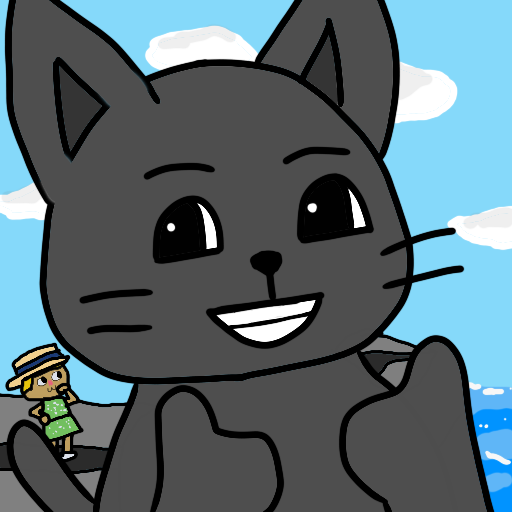
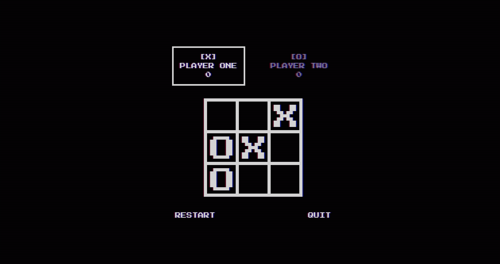

Mission 01 Complete

Battleship
A browser-based Battleship game built using test-driven development.
01 / About

My curiosity about how websites come together led me to The Odin Project , where I've been building my skills one project at a time. I pay close attention to detail and have an eye for clean, thoughtful design.
What I enjoy most is turning ideas into products people can actually use, and I hope to one day build something that genuinely benefits society. I'm always learning, and each project in the mission log below is a step along the way.
02 / Projects
A browser-based Battleship game built using test-driven development.

A task management application built with vanilla JavaScript and Webpack.

A fun web project recreating a childhood toy.

A browser-based Tic-Tac-Toe game you can play locally with your friend or against a bot.

A browser-based Rock Paper Scissors game where you play against a bot.
03 / Skills
04 / Contact
Signal is strong. Awaiting your transmission.